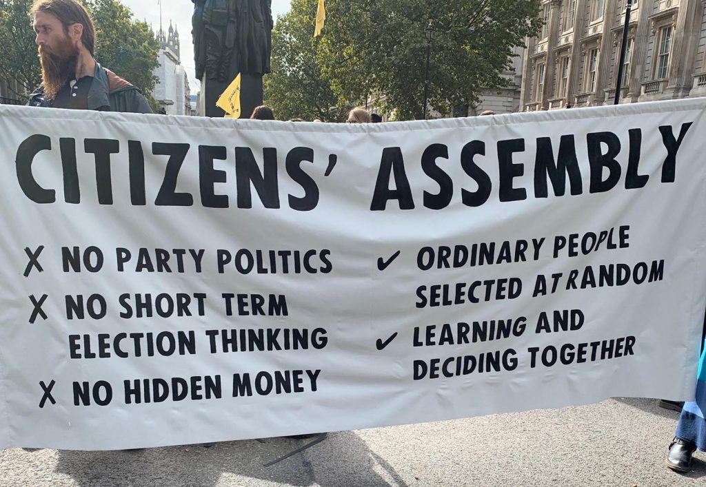

This post began as a long tweet thread in response to Tim Dean's asking for my views on New Zealand's tilt toward proportional representation (PR). I've expanded it a little here, but it's still a short post. In any event it tries to crystalise something I think is important in the way I see things — and in how I see them differently to those who give more weight to political theory than I do.The New Zealanders' more PR(ish) system seems to be working well for them. But while such topics occupy the minds of the political ‘thinkers’, that’s because academia in particular is so given to ‘big debates’ with ideal types with long histories in the literature.
Here, as in other areas like economics, I think much more progress is possible by paying less attention to theory and the endless set-piece debates between this and that (say FPTP v PR) and more attention to specific hacks which look like they could make a major contribution. I set out the difference between an 'idea' and a 'hack' in this passage.
Friedman’s ‘idea’ was unbundling delivery from funding leading to the ‘hacks’ of vouchers and income-contingent loans, for instance. Coase’s ‘idea’ was to think about externalities as an artefact of the definition and assignment of property rights, the corresponding ‘hacks’ being such things as pollution permits and spectrum auctions.
By contrast, I pointed to George Stigler’s research into utility regulation in the 1950s which documented the results of what we now call ‘regulatory capture’. This provides us with an ‘idea’ (price regulation isn’t all it’s cracked up to be.) It also leads us to ask if we could change things to improve this – change regulatory governance or whatever. But where, in the cases above, the hacks arise as ‘aha’ moments from the analysis (even if such aha moments turn out to be a dead-end or require lots more development), Stigler’s critique, his ‘idea’ might give us some ‘aha’ about something that’s wrong, but it doesn’t lead directly to any ‘aha’ moment as to how to fix it.
In the language I developed in that article, the idea embodied in juries is that the public can be represented by sampling from the relevant population (as opposed to elected representation). And the 'hack' is simply doing so. The idea can be instantiated in the real world immediately via random or other form of sampling in a jury. I think there’s a lot to be said for bringing citizens’ juries into our understanding of checks and balances. Not only are they a different way to do democracy — different 'theory' of democracy if you will. They’re time-honoured. So, in seeking the populace’s support, we wouldn’t be asking them to back some professor’s theory but rather the chain of legitimacy back to Magna Carta and beyond and to 'lean into' their trust of their neighbours (and theirdistrust of politicians). I’d LIKE to think that greater PR here would improve things, but I just don’t know. New Zealand has done some good things since greater PR, but nothing DIFFICULT that I can think of. And the alternative is Italy which doesn’t appeal. So where I'm sceptical that theory tells us enough to be confident that a shift from single member electorates to something more PR(ish) like New Zealand, I think we can target the 'idea/hack' of representation by sampling at specific problems (as I proposed in a general way here) and in so doing have confidence we're making clear improvements. I also take heart from the new community vigour that Voices for Indi and other moves for independents around the country has brought.
One of the weirder things about the PR debate is that Italy has not used PR since the beginning of the Second Republic in 1993. Nevertheless, Italy gets trotted out as type case for PR instability. And before you quickly move over the border to France, that country only used PR under the Fourth Republic and for one election late in Mitterand's presidency.
Performance of consensus democracies and majoritarian democracies is extensively discussed in Patterns of democracy (2012) Lijphard. A short summary is that PR is far more common among advanced democracies than FPTP and that economies with PR tend to somewhat outperform economies with FPTP.
Thanks Alan Your point doesn't vitiate mine. And how much have Italy and France moved away from PR?
But for one election under Mitterand, France has only sued PR in the period 1946—58. The National Assembly is elected by single member districts on the two round system, TRS reproduces some, but not all advantages of preferential voting. The Third republic 1870—1940 sued the same electoral system and had the same level fo government instability and policy gridlock as the Fourth. Italy has used multiple electoral systems since 1993 which have mostly been sui generis. The longest lasting was 'bonused PR' where the largest coalition got bonus seats to try and stabilise the government. Austria, Germany, the Netherlands and the Scandinavias all use PR. They are not known for revolving door governments or policy gridlock although the Netherlands can take absurdly long times to form government. Weirdly the fastest government formation happens in Denmark (average 5 days) where the queen has a much more active role in government formation than anywhere else. Danes put it down to the specialness of Margrethe II.
There is a lot to be said for constituting electorates which are small enough for it to be possible for citizens to mount a deputation to see their local member about an issue, (like our House), as distinct from electorates based upon political ideology (like our Senate). People choose their vote for a range of reasons and ideology is legitimately one, but personal knowledge and effectiveness in tackling local issues are also important motivators. If proportional representation necessarily means multi-member electorates, then the prospect of local familiarity fades. It is probably good to have a mixture (like our present split system).
I think our split system is very good. I don't know of better ones. And the two great things that point politicians to the median voter are 1) compulsory voting and 2) preferential voting.
David Deutsch makes an excellent argument for proportional representation is bad (and Brexit is good). https://www.youtube.com/watch?v=xdtssXITXuE&ab_channel=JoeBoswell I'm pro-Brexit (being of Greek extraction, I think I have a very different perspective of the EU). On proportional representation, I'm unsure what I believe. But Deutsch makes excellent arguments. His argument in a nutshell: you want a system where a party has the ability to execute their political program without much compromise. That way, the electoral program is executed to its full extent and an uncompromised policy trial takes place for which the implementing party can be judged wholly responsible for. I suppose an Australian example of this is carbon and refugee policy. The Labor Party has had to compromise with the Greens and never been able to execute their desired policies uncompromised so it's never really been tested. Anyway, interesting stuff. Unsure what I personally believe.
This is an odd debate to me, because we literally have the simplest, clearest solution to all these identified problems, right here in Australia. Hare-Clark (used in Tasmania and the ACT) has all the benefits of both MMP and FPTP and (almost) none of the disadvantages. (The only serious disadvantage is that your electorate is five times larger than it would otherwise be, so maybe it's a longer drive to the electorate office, though you can offset this with more politicians. This disadvantage is also offset by the fact that you're much more likely to have choice in which MP you appeal to, rather than potentially seeking electorate assistance during some personal/administrative crisis from some hated ideological enemy or whatever). Hare-Clark obviously means that you can make more than just a yes-no vote on the policies and performance of the government, take all at once. (Nobody can read your mind, so no matter your intention, that's the effect of all voter behaviour in a pure two-party system). You have no ability to sack an ineffective local member without also casting a vote against a policy you might fervently support, for instance. Of course, you have the choice of just two parties, and they, not you, define the issues they will contest the election on, which you will either accept or reject. It's also clear that Tasmanians DO get majority government, all the time. They don't need to - there is no obligation in electoral law - but they CHOOSE to have majority government. This is clearly a more democratic approach.
I think the arguments are quite good, but they're proposed in a naïve way. There are so many different things going on, and you'll note early on he plumps for Popper as someone who's basically solved all these philosophical problems. I remember the first half of his book The Beginning of Infinity as being full of really insightful illustrations of some of Popper's points but it got madder and madder as he put more and more faith in what, after all are singular arguments in an immensely complex world. Regarding his arguments here, the process of working out what to do within government — say how you design a policy, how you identify what's essential and what's not — get no weighting at all. We have a naïve model of democracy in which there are the people and the politicians, a market if you like and the people get to go shopping and test things once an electoral cycle. In fact if you look at how politics is prosecuted, platforms are rarely clear. Even in the case of Brexit which was a binary choice, there was lots of unclarity. The pro-Brexit camp was evasive or delusional depending on your point of view about the kind of deal they could obtain. In this sense the decision ultimately came down to a structuring arrangement. Had the powers that be taken a leaf out of John Howard's republican referendum playbook, they'd have set up the referendum process so that the Brexit folks had to get some concrete Brexit arrangement across the line — which would have stymied the alchemy by which 'Brexit' could be many things to many people. Further, we never get a controlled experiment in politics. Stuff happens that you weren't expecting. And even if it doesn't, it's almost invariably the case that you can't tell how well a policy as announced worked. How well was it implemented? Where the unfortunate consequences really to be expected and needed to be worked through, or due to something else and on and on. The 'thinness' of Deutsch's arguments also suggest lots of things for which the evidence seems to go the other way. Judging from economic performance, federations seem to outperform unitary states, bicameral parliaments, unicameral parliaments, yet in each case the latter generate crisper lines of accountability. (I count the UK as essentially uni-cameral and unfederated, just like New Zealand). Both have performed worse than Australia I think partly because of the ways compromise is built into our own system of federal and bicameral negotiation. To reiterate, I think Deutsch's arguments are good as far as they go, but there's a lot more in heaven and earth.
Having completed a fairly long comment below, it occurred to me that the discussion itself illustrates the theme in my short post. We love the set pieces of political theory. Problem solving, bug fixing, hack constructing, not so much :)
Yep, all good points. One thing I'd add: path dependence seems most important. If you've already got a functioning system, don't get too experimental! And I wouldn't discount England/Britain too much -- England/Britain has probably been the most successful rags to riches story ever told. Their recent history has seen them drop in the pecking order, but I don't think that's due to their parliamentary system. And Canada, Australia and New Zealand have the unfair advantage of plenty of land along with the USA essentially guaranteeing their defence and technological progress. They've never had to deal with the deranging impact of a landed gentry, stagnation or battles of independence or national defence, so their parliamentary systems have never really been tested. Unfortunately, it now seems Canada, Australia and New Zealand are developing a de facto landed gentry -- and so far they've done a pretty poor job dealing with it!
Is there value in thinking about PR and sortition as two separate useful hacks, addressing different problems of democracy as done in Australia? PR would enhance most voters sense of being represented (a large proportion of seats in Federal Parliament are "safe", and so for any issue that is not some simple problem-solving, nearly half the voters in the electorate will feel that their local member is at odds with their own views - I live in the electorate represented by B. Joyce ... who I am pretty certain does not share my views on climate change, and would seem unlikely to take my perspective into account). PR might also encourage a more deliberative approach to debate and perhaps minimise the gladiatorial circus aspects of our current system. Sortition could be a complement - there seems no reason why almost any issue under consideration could not be considered by a sortition community, perhaps interacting with technical "experts" drawn from the public and private sectors - so that parliamentary debate was strongly influenced by direct community consultation via sortition.
Yes, PR, single-member electorates and sortition are all 'hacks' and should be used to taste. They have different qualities and can be targeted at different maladies, though of course they will be in tension with each other in different ways. Where, as I understand it, New Zealand has single member electorates with a PR 'topping up' process, that's not so unlike our arrangement with the Senate — so you can talk to your NSW Senator who is supportive of reality when it comes to climate change — not just privately, but publicly as well. Indeed, in my ignorance, methinks the similarity between the two systems suggests some influence of us on them.
It seems to me that the way FPTP works in the UK is an outrage. For instance it led to a landslide of a party with ~ 40% of the vote — where there was a majority of votes for parties against Brexit. Australia's preferential voting is much, much fairer. Canada seems to have similar problems — and an undemocratic upper house — yet they have if anything better government than Australia.
You're mistaken, and the systems are not similar. The kiwis esssentially elect their lower house through our Senate election system. The single member electorates are pretty much just for show.
Do the different requirements stated in the banner apply as selection criteria ? Ordinary people? Does this exclude some of us?
Since the banner is propaganda, I expect it's intended to give the impression that it doesn't exclude anyone. Who knows how respectful such folk would be to what ordinary people think if it differed from what they think, or how they might want to operationalise the idea of choosing 'ordinary people'.